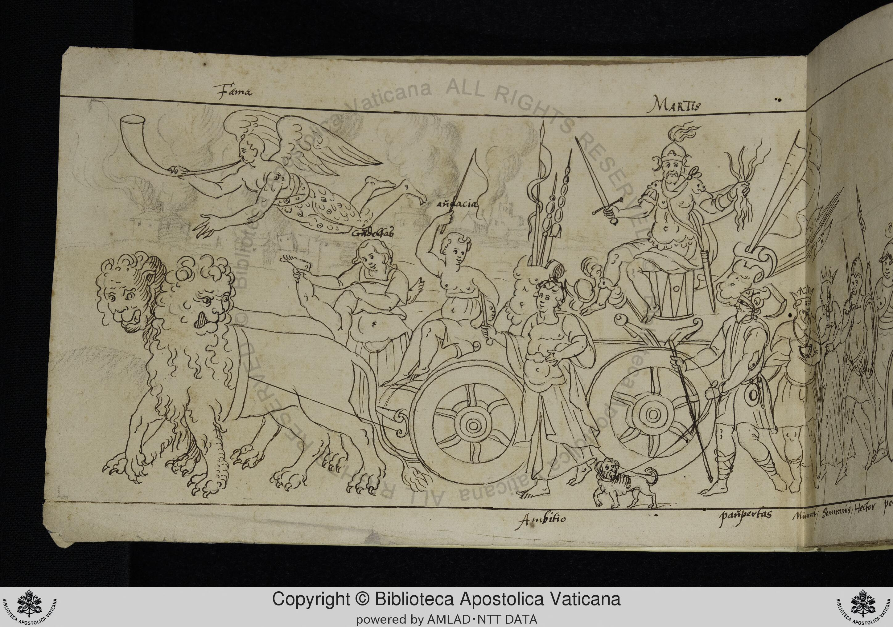

Folio f001v
The triumph appears to be that of Mars (Martis). He rides in a chariot pulled by two lions. The chariot is also occupied by other figures, including one labeled "Andacia." The scene depicts a procession with various figures accompanying the chariot.
Labeled Figures
- "Fama" Fame Winged figure blowing a trumpet, top left.
- "Martis" Mars Bearded figure in armor, holding a sword and what appears to be a bundle of flames, riding in the chariot, top right.
- "Andacia" Audacity Figure holding a flag, riding in the chariot.
- "Ambitio" Ambition Figure standing in front of the chariot, near a small dog.
- "pašpertas" Poverty Figure walking in front of the chariot, holding a staff.
- "Minnet, Sevirang, Hector peo" Nimrod, Semiramis, Hector and others Group of figures following the chariot, including crowned figures.
- "Condeftab" Constable Figure riding on the chariot, holding a foot.
Significance
This drawing belongs to the tradition of Petrarchan Triumphs, depicting allegorical processions of virtues, vices, and historical figures. The triumph of Mars is less common than those of Love, Chastity, Death, Fame, Time, or Eternity, making this page potentially significant. The inclusion of figures like "Andacia" (Audacity) and "Ambitio" (Ambition) as attendants of Mars provides insight into the artist's interpretation of the god of war. The presence of Nimrod, Semiramis, and Hector suggests a connection to the "Nine Worthies" tradition, or a broader concept of historical figures associated with military prowess and leadership. The figure labeled "Condeftab" (Constable) holding a foot is unusual and requires further investigation. The inclusion of "pašpertas" (Poverty) suggests a moralizing aspect to the triumph, perhaps implying that even the powerful Mars is not immune to the effects of poverty.